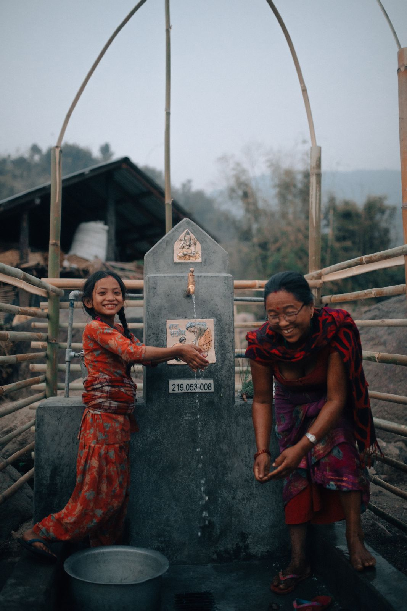

Build a World Where
Everyone Has
Clean Water
Donate with confidence and join a global community of change-makers. 100% of your donations fund sustainable clean water projects with real proof of impact through photos, GPS updates, and stories from the communities you help transform.
